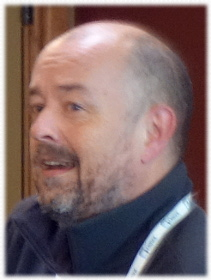

SMB/CIFS compounding support
In a filesystem-track session at the 2018 Linux Storage, Filesystem, and Memory-Management Summit (LSFMM), Ronnie Sahlberg talked about some changes he has made to add support for compounding to the SMB/CIFS implementation in Linux. Compounding is a way to combine multiple operations into a single request that can help reduce network round-trips.

He is trying to increase the performance of the kernel's SMB/CIFS client (which he called cifs.ko). He started by describing how compounding works in various versions of SMB. Server Message Block (SMB) 1 (also known as Common Internet File System or CIFS) had no caching in the clients, which meant that attributes needed to be retrieved from the server each time they were needed. If a stat() call was done, it would do many round-trips to the server; if another was done 1ms later, it would all be done again.
SMB 2 added a mechanism to overcome this problem, but both cifs.ko and the Microsoft server just implemented SMB 1 behavior inside SMB 2 packets. Doing a statfs() in SMB using cifs.ko today requires nine round-trips. If the server is in a different city, Sahlberg said, "you are not going to have a good time".
Microsoft has started using these new features to make SMB 2 work better. If Linux did compounding, it could reduce the nine round-trips to three. Adding in the attribute caching that Steve French is working on could drop the cost to one or even zero round-trips. In reality, zero is not achievable since there are some things that should not be cached, but a reduction from nine to one is huge.
NFS versions 3 and 4 also have compounding support but, unlike SMB, there is only one NFS header in a compound operation; SMB has a protocol header per operation. For SMB, each operation is attempted in order, regardless if any of the earlier ones have failed. For NFS, if an operation fails, that ends the processing of the compound message.
Given those differences, Sahlberg wondered if there was a way to come up with some common code that could be shared between the two. Jeff Layton said that he had tried something like that a long time ago, but it has totally bit-rotted away. He said that it is fairly hard to do code sharing in the compounding support for the two protocols.
If you look at the network traces for NFS, you will see compounded operations, French said. There are barriers to how many different operations can be collected up into a compound message, though, because of the way they are handled by the VFS layer. If a way were found to combine more operations for NFS, perhaps that could be used for SMB as well. The macOS developers have done a lot of work to reduce the round-trips by compounding six or seven operations in one message, French said. But Layton suspected that was being done from user space, since the macOS kernel and VFS are similar to Linux; it should have most of the same constraints.
Sahlberg said that his intent was to try to do better and better with the compounding over time so that we can "at least get to the point where people will not laugh at us". There is also a lot of technical debt "hanging around" with the SMB 1 protocol encapsulated into SMB 2, which he is also fixing. He is targeting the 4.18 merge window for starting to get this work upstream. Layton said that it looks like a nice cleanup in some code that is not all that easy to deal with.
| Index entries for this article | |
|---|---|
| Kernel | Filesystems/Network |
| Conference | Storage, Filesystem, and Memory-Management Summit/2018 |
Posted May 23, 2018 1:17 UTC (Wed)
by jlayton (subscriber, #31672)
[Link]
https://git.samba.org/jlayton/?p=jlayton/linux.git;a=shor...
The basic idea was to rework the sunrpc layer to handle SMB traffic as well as RPC.
Trying to share code to do compounding is probably not going to be terribly fruitful as the encoding is not similar at all. The transport needs of SMB and NFS however are quite similar.
Posted May 24, 2018 6:27 UTC (Thu)
by mjthayer (guest, #39183)
[Link] (1 responses)
Posted Jun 2, 2018 21:25 UTC (Sat)
by smfrench (subscriber, #124116)
[Link]
But ... SMB3 kernel client without compounding (and handle caching and directory leases) can be much slower for large directories and metadata searches. This is very exciting work that Ronnie at Redhat is doing to introduce compounding into the kernel client (cifs.ko) for SMB3.
In addition, Long Li's work (various "smbdirect" - ie network file system i/o over RDMA) is impressive. Windows, NetApp etc. servers support RDMA and it is nice to be able to take advantage of this with very easy to use SMB3 mounts using the work Long Li has done. He has a pending patchset as well for improving SMB3 direct i/o in the kernel. Hard to imagine a userspace FUSE client able to keep up with that.
SMB/CIFS compounding support
SMB/CIFS compounding support
SMB/CIFS compounding support